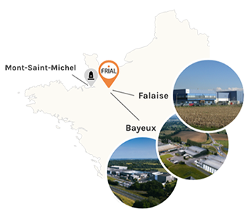
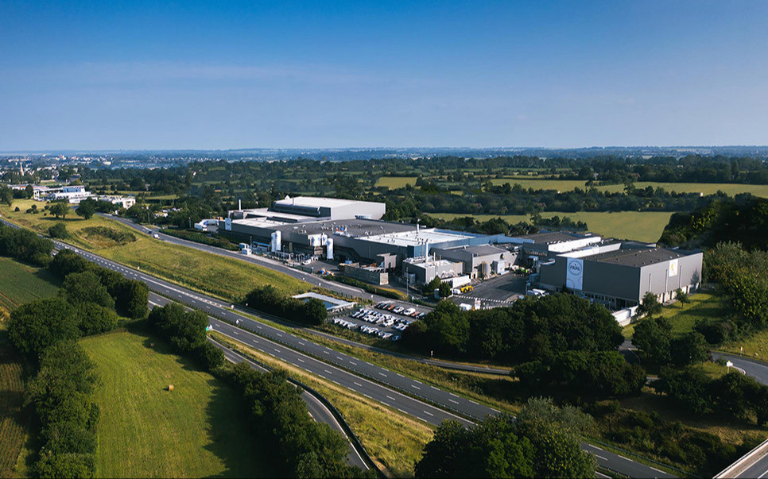

Créateur et fabricant de solutions alimentaires surgelées au détail.
Le groupe accompagne les clients de ses partenaires, spécialistes du surgelé,
commerçants et traiteurs en France et à l'international, en proposant des solutions innovantes et
personnalisables sur les segments des produits de la mer et du prêt-à-manger, à partager ou à l'unité.
L'innovation est portée par une équipe pluridisciplinaire et multiculturelle.
Nous combinons l'identification des nouvelles tendances, le développement des emballages et nos connaissances culinaires.
La naturalité, le goût et l'équilibre des recettes
sont au cœur de notre travail de développement. Nous nous engageons à travailler avec des matières «clean label» et à réduire la liste des ingrédients.
